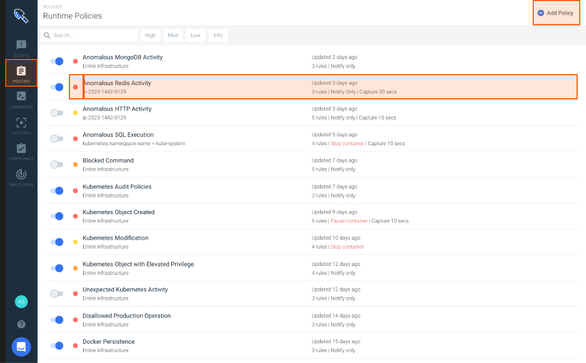
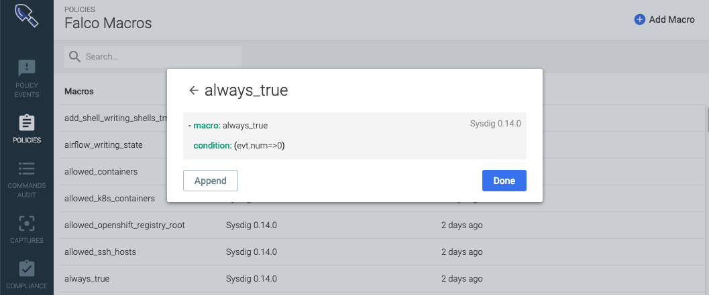

**Policies** (New Editor)
<Intro>
Contents
Contents
Understanding Sysdig Secure Policies
Reviewing the Runtime Policies UI
See at a Glance
Take Action
Understanding Sysdig Secure Rules
Falco Rules
"Basic" Rules
Container Rules
File System Rules
Network Rules
Process Rules
Syscall Rules
Understanding the Rules Library
Using Falco within Sysdig Secure
What is Falco
Anatomy of a Falco Rule
About Falco Macros
About Falco Lists
(On-Prem Only) Upgrading Falco Rules with the Rules Installer
Getting Started
Understanding Sysdig Secure Policies
A Sysdig Secure policy is a combination of rules about activities an enterprise wants to detect in an environment, the actions that should be taken if the policy rule is breached, and-- potentially-- the notifications that should be sent. A number of policies are delivered out-of-the-box and can be used as-is, duplicated, or edited as needed. You can also create policies from scratch, using either predefined rules or creating custom rules.
Reviewing the Runtime Policies UI
Select Policies > Runtime Policies to see the default Policies included with Sysdig Secure.
|  |
From this overview, you can:
See at a Glance
Severity LevelDefault policies are assigned High, Medium, Low, or Info level severity, which can be edited.
Enabled/Not Enabled Viewed by toggle
Policy Summary
Includes
Updatestatus, the number ofRules, assignedActionsto take on affected containers (Stop | Pause | Notify), andCapturedetails, if any.
Take Action
From this panel you can also:
Drill down to policy details(and potentially Edit them)
Search and filter policies by name, <keyword??>, or severity level
Enable/Disable a policy using the toggle
Create a new policy using the
+Add Policybutton
Understanding Sysdig Secure Rules
A rule is any type of activity that an enterprise would want to detect in its environment.
Rules can be expressed in two formats:
Falco rules syntax
Basic rules syntax, grouped into five types: Container Image, File System, Network, Process, and Syscall.
The Sysdig Secure UI groups rules into the different types and provides appropriate rule-creation entry screens for each type. (See also: Create a Rule.)
 |
Falco Rules
See Using Falco within Sysdig Secure for a Falco overview.
Note that Falco rules can be complex, and can be scaled to 100s of rules without impacting performance.
"Basic" Rules
Basic rules provide for simple detections of processes, network connections, and other operations. For example:
If this process is detected, alert me.
Or
If a network connection on x port is detected, alert me.
Unlike Falco rules, the basic rule types do not permit complex rule combinations, such as "If a connection on x port from y IP address is detected..."
Basic rules can be scaled to 1000s of rules without impacting performance.
The five categories of basic rules are described below.
Container Rules
These rules are used to notify if a specific image name is running in an environment.
File System Rules
These rules are used to notify if there is write activity to a specific directory/file.
<distinguish between read-only or read/write. I.e. whitelist files>
Network Rules
These rules are used to:
Detect activity on ports outside a trusted list on a specific list
Notify in case of unexpected inbound/outbound connections
Process Rules
These rules are used to detect if a specific process, such as ssh, is running in a particular area of the environment.
Syscall Rules
Note
The syscall rule type is almost never deployed in user-created policies; the definitions below are for information only.
These rules are used (internally) to:
Notify if a specific syscall happens in a list
Notify if a syscall outside this trusted list happens in the environment
Understanding the Rules Library
Organized by tags, where create new rules, can be referenced in policies.
Using Falco within Sysdig Secure
What is Falco
Falco is an open-source intrusion detection and activity monitoring project. Designed by Sysdig, the project has been donated to the Cloud Native Computing Foundation, where it continues to be developed and enhanced by the community. Sysdig Secure incorporates the Falco Rules Engine as part of its Policy and Compliance modules.
Within the context of Sysdig Secure, most users will interact with Falco primarily through writing or customizing the rules deployed in the policies for their environment.
Falco rules consist of aconditionunder which an alert should be generated and anoutput stringto send with the alert.
Conditions
Falco rules use the Sysdig filtering syntax (documented here).
(Note that much of the rest of the Falco documentation describes installing and using it as a free-standing tool, which is not applicable to most Sysdig Secure users.)
Rule conditions are typically made up of macros and lists.
Macros are simply rule condition snippets that can be re-used inside rules and other macros, providing a way to factor out and name common patterns.
Lists are (surprise!) lists of items that can be included in rules, macros, or other lists. Unlike rules/macros, they can not be parsed as Sysdig filtering expressions.
Behind the scenes, the falco_rules.yaml file contains the raw code for all the Falco rules in the environment, including Falco macros and lists.
Anatomy of a Falco Rule
All Falco rules include the following base parameters:
rule name: default or user-assigned
condition: the command-line collection of fields and arguments used to create the rule
output:
source:
description:
tags: for searching and sorting
<priority?>
Select a rule from the Rules Library to see or edit its underlying structure. The same structure applies when creating a new Falco rule and adding it to the library.
Existing Rule | Create a Rule | ||
<where's priority?> |
|


About Falco Macros
Many of the Falco rules in the Rules Library contain Falco macros in their condition code.
You can browse the Falco Macros list, examine a macro's underlying code, or create your own macro.
|  |
To override the behavior of the default macros included in Sysdig Secure policies and rules, use the Rules Editor.
 |
About Falco Lists
Default Falco lists are added to improve user experience around writing custom rules for the environment.
For example the list allow.inbound.source.domains can be customized and easily referenced within any rule.
(On-Prem Only) Upgrading Falco Rules with the Rules Installer
Sysdig Secure SaaS is always using the most up-to-date Falco rules set.
Sysdig Secure On-Prem accounts should upgrade their Falco rules set regularly.
Rules Installer
Use the Docker pull command and instructions on for the Rules Installer, here.
Getting Started
NOTES
Release Notes & Update
- Differences between V1 and V2 policies
- Policies now support multiple falco rules- Policies no longer have priority